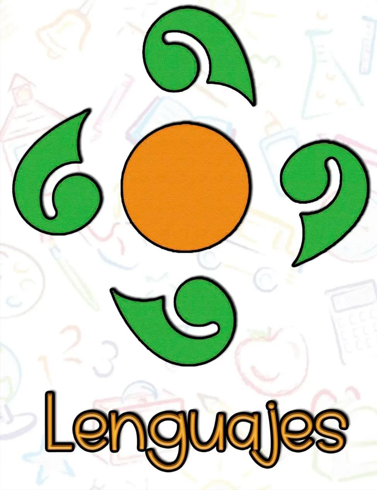

En la Telesecundaria 491 nosotros como docentes nos damos a la tarea de que el contenido
que llevan sus hijos sean de mucha ayuda para su crecimiento es por eso que nosotros impartimos
los siguientes campos formativos donde se abordan diversas asignaturas.
Español, Inglés, Artes, Lengua Materna
